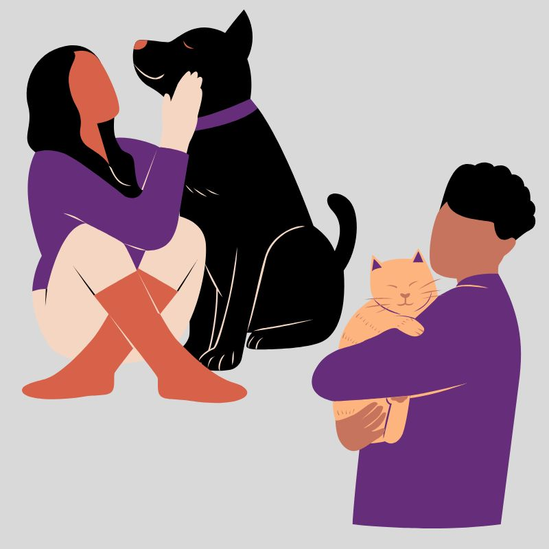
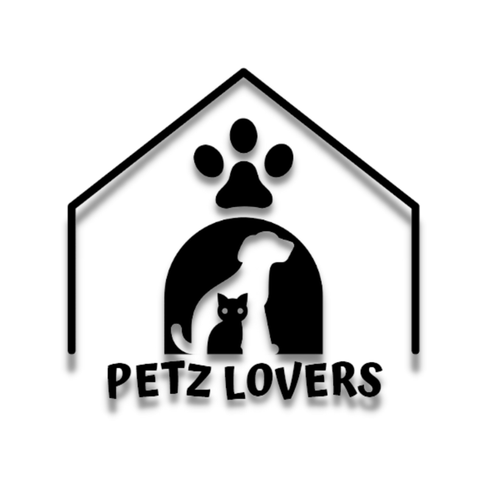
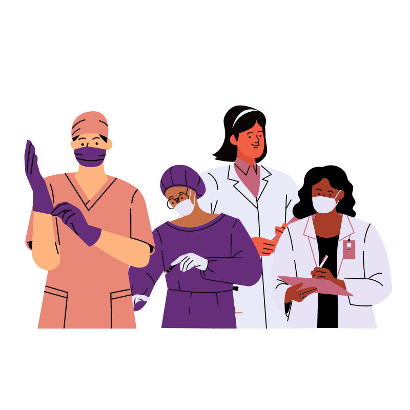
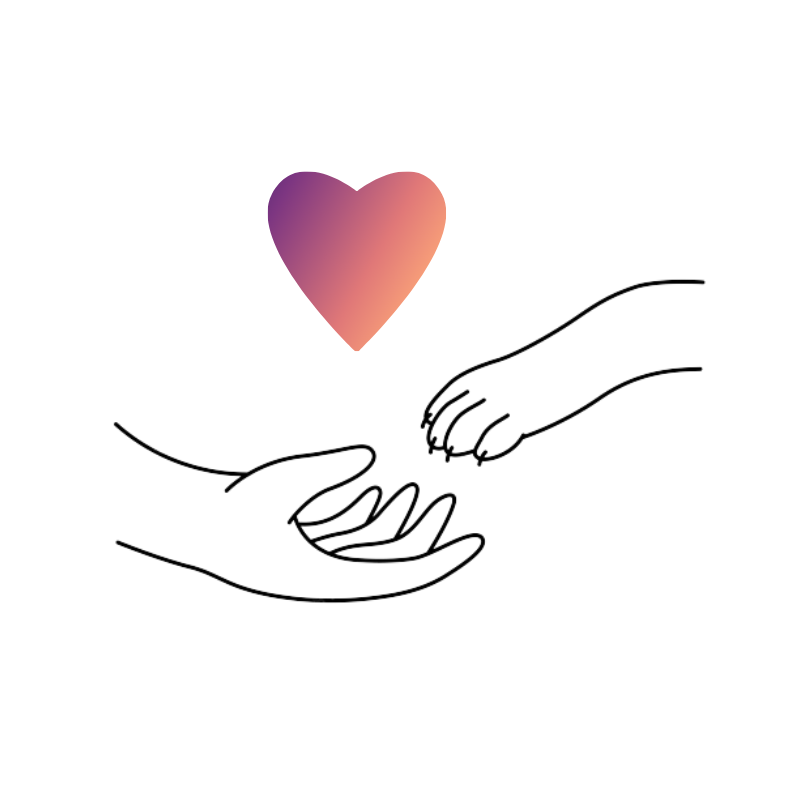

Alguns de nossos cuidados
Nossa equipe de voluntários trata todos os animais resgatados com muito amor e carinho. Seja banhando, brincando ou passeando com eles.
Saiba Mais


Nossa ONG
Nossa ONG fundada em 2010, vem atuando ativamente no resgate de cães e gatos, tanto das ruas, quando de tutores abusivos. Nós os trazemos a nossa organização, onde recebem os devidos cuidados e amor.

Nossa equipe
Temos parceria com diversas clínicas e hospitais veterinários que estão sempre de prontidão para nos ajudar nessa jornada, seja em atendimento emergencial ou castrações.

Adoção e doações
Após todos os cuidados o animal fica disponível para adoção. Como somos uma ONG sem fins lucrativos nos mantemos através de doações e parcerias.